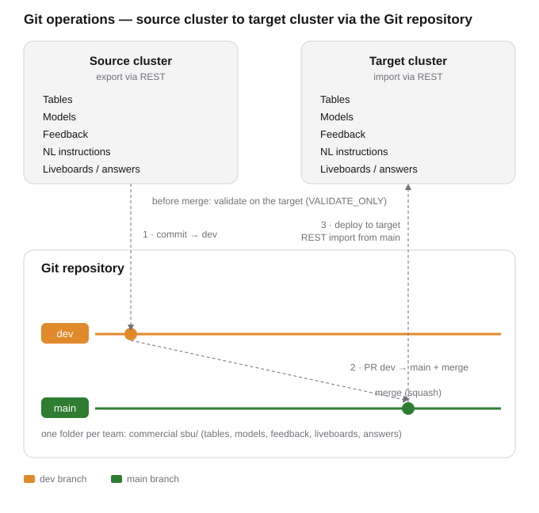

Git operations overview
This tool copies ThoughtSpot content (tables, models, answers, liveboards, Spotter feedback,
and Spotter instructions) from one cluster or org to another. It uses a GitHub repository in the
middle: every promotion is written there first (staged on dev, reviewed via a pull
request, recorded on main) before it lands on the target. The tool reads from the
source and writes to the target over the REST API; it does not rely on ThoughtSpot's built-in
Git integration to deploy.

Source cluster to target cluster, staged and recorded through the Git repository.
Every object carries an obj_id, a stable name that stays the same across clusters.
On import, ThoughtSpot matches by obj_id first: if the target already has an object
with that obj_id it is updated in place, otherwise a new one is created. This is what
keeps promotions from making duplicates.
obj_id that
matches its counterpart on the target, suggests one where missing, and applies it on your click.
This is what makes an update land in place instead of creating a copy.dev
branch under the team folder, opens a dev to main pull request, and
runs a dry-run validation against the target (a VALIDATE_ONLY import) to catch problems before
anything is committed for real.main (the record
of what was promoted), then the tool imports from main into the target over REST, in
order: tables and models, then feedback, then NL instructions, then liveboards and answers.Order matters. Feedback and NL instructions attach to a model, so they are applied only after that model exists on the target. Liveboards and answers come last because they reference the models.
dev into main.